Terrarium Control Pro comes with Home Assistant already installed and the Control Freak integration already connected. You get everything people love about it, without the setup. Just plug it in.
How many apps do you open today? Home Assistant puts your shelf and the rest of your smart home in one place, so you have one app to check and one to control.
Home Assistant works with over 1,000 brands through 1,500+ integrations. Lights, plugs, thermostats, locks, speakers and cameras you already own can finally talk to each other.
It runs on the controller on your home network, not in someone else’s cloud, so it answers right away and keeps working when the internet doesn’t. Your data stays home.
Ask Alexa what the status is, tell Google to adjust the temperature, or use Siri through HomeKit, and get automated voice alerts when something is out of balance.
Anything your shelf knows can set off something else: lights, speakers, thermostats and alerts on every phone. A few ideas are below.
Your setup lives in your home, not on a company’s server. Home Assistant is open source, and run by a non-profit that can’t be sold. Control Freak adds no subscription.
When the enclosures switch to night, the room lamp dims too.
Add your own wireless humidity sensor; it shows beside the temperatures.
Speakers announce which enclosure, and your phone gets a push.
Works with the Control Freak gear you already own: every Control Freak product is a complete kit on its own. If a Control Freak controller you already have has a free port or relay, Home Assistant can put it to work for this product too.
Home Assistant figures: home-assistant.io, October 2026. Home Assistant is a trademark of the Open Home Foundation. Your lights, speakers and thermostat aren’t in the box.
